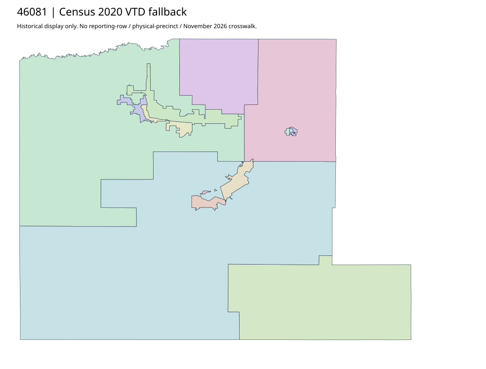

304 ordered indexLawrence | 46081
Official GIS Maps parent links three acquired county/municipal voting-district PDFs. These distinct map extents are shared parent resources; their published labels and historical dates do not match the workbook absentee group or establish a 2026 crosswalk. GIS Data parent exposes no actual downloadable voting-district file in its captured HTML.
7 priority / 11 full historical observations. Parent is a summary ancestor, not additive to leaves. No physical feature matches or current reporting crosswalk approved.
Acquired shared-parent assets
map-46081-42ebaf0a5587 | complete1-page PDF; all-page contact sheet; complete page1; complete original gzip. Exact reconstruction: python -B scripts/reconstruct.py --id map-46081-42ebaf0a5587 /private/tmp/map.pdf
map-46081-f2a5dadfdc64 | complete1-page PDF; all-page contact sheet; complete page1; complete original gzip. Exact reconstruction: python -B scripts/reconstruct.py --id map-46081-f2a5dadfdc64 /private/tmp/map.pdf
map-46081-9b9963132dc9 | complete1-page PDF; all-page contact sheet; complete page1; complete original gzip. Exact reconstruction: python -B scripts/reconstruct.py --id map-46081-9b9963132dc9 /private/tmp/map.pdf
Census2020 fallback
14 native historical VTD features. Entire785-feature ZIP original retained once, all66 counties. Yankton has one countywide VTD. No current/reporting allocation. complete original gzip

Full binary/attribute/geometry QA
Observed authority/acquisition routes
Complete SOS authority fields including original blank/masked values: parent inventory. No contacts were sent.
Ordered full children
- Absentee Precinct | 9096 source votes | priority
- Precinct-10 | 1293 source votes | priority
- Precinct-03 | 979 source votes | priority
- Precinct-02 | 874 source votes | priority
- Precinct-01 | 803 source votes | priority
- Precinct-09 | 712 source votes | priority
- Precinct-04 | 706 source votes | priority
- Precinct-07 | 398 source votes | remainder
- Precinct-05 | 216 source votes | remainder
- Precinct-06 | 170 source votes | remainder
- Precinct-08 | 161 source votes | remainder